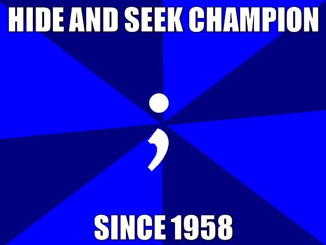
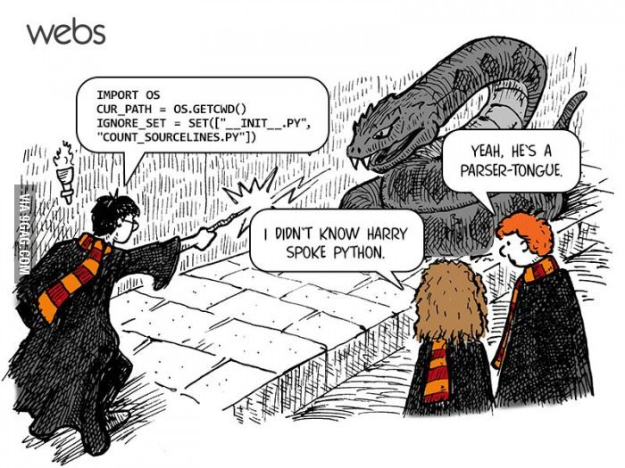

This unit focuses on the advanced features of programming. For example students learn about data storage and manipulation. They also write programs that input data from existing files, process the data, and create files for external data storage, following an appropriate problem-solving model (e.g., Create a data file containing employee information including hours worked and rate of pay. Read from the file, compute, display, and write to a new file the gross pay for each employee.). In addition modular programming is introduced. Data structures such as arrays are taught. Common algorithms like the Bubble Sort are examined. Students are expected to incorporate as many of these more complex programming features in their final summative project.
 
 This page was last updated on 05/29/97 at 16:43
This page was last updated on 05/29/97 at 16:43